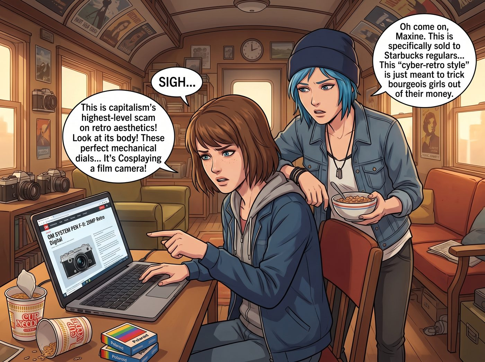

賽博終結者的臨時工牌

當 Max 在筆記本電腦上看到那則關於某款復古相機規格洩露、搭載兩千萬畫素感光元件的新聞時，她發出了一聲充滿了文青式絕望的長嘆。
對 Max 這種堅持在暗房裡聞著顯影液酸味、為了買絕版寶麗來相紙寧願吃一整週泡麵的絕對類比原教旨主義者來說，這種產品簡直是數位時代對底片文化的終極褻瀆。
「這就是資本主義對復古美學的最高級別詐騙！」
Max 指著螢幕上那台擁有著精緻蒙皮、經典銀黑配色，看起來就像是從一九七零年代穿越過來的相機，轉頭對著正在吃麥片的 Chloe 抱怨：「妳看它的外殼！這完美的機械轉盤，這復古的軍艦部！但它的靈魂卻是一塊冰冷的數位感光元件！這就像是給終結者穿上了一套維多利亞時代的蕾絲洋裝！它在Cosplay一台底片機！」
Chloe 湊過去看了一眼標價，立刻翻了個白眼：「得了吧 Maxine，這就是專門賣給那些想要在街頭假裝自己是藝術家，但實際上連底片怎麼捲都不知道的星巴克常客的。這種賽博復古風就是用來騙小資女的錢的。」
Victoria 端著一杯黑咖啡走過來，用一種看透市場底層邏輯的眼神掃了一眼螢幕。
「Price，這不叫騙錢，這叫情緒價值定價法。」名媛冷冷地糾正道，「現代人渴望那種我很有品味、我很懷舊的社交標籤，但他們絕對無法忍受拍完照不能立刻傳到手機上發社群媒體的痛苦。這台相機提供了復古的視覺裝飾，同時保留了數位時代的即時滿足感。從商業產品線的角度來看，這是一個完美的市場定位。」
Max 痛苦地抱住頭：「但這沒有靈魂！攝影的本質在於等待！在於按下快門那一刻的不可逆轉！妳們不懂那種沖洗底片時，看著影像在藥水裡慢慢浮現的魔法！」
一、實習生的耗材與環保合規審計
就在這時，原本在角落裡安靜核對帳單的實習生 Lily，耳朵精準地捕捉到了藥水這兩個字。
Lily 推了推反光的圓框眼鏡，抱著平板電腦走到了 Max 面前，大眼睛裡閃爍著無情的數據光芒。
「Max 學姐，您剛才提到的魔法，在我們的年度財務報表上呈現出了一種極度危險的財政赤字趨勢。」Lily 語氣軟糯，但殺傷力驚人，「根據我對您過去六個月的採購記錄審計，您購買寶麗來相紙、底片以及各類化學顯影劑的開銷，佔據了車廂非必要精神娛樂預算的百分之六十八。」
Lily 點了點平板螢幕：「更嚴重的是合規問題。您在洗手間臨時搭建的暗房裡使用的那些顯影劑，含有對苯二酚和硫代硫酸銨。根據環保署資源保護與回收法，這些屬於受管制的潛在有毒有害廢棄物。我們如果繼續未經專業處理就將它們排入奧林匹亞半島的地下水系統，最高將面臨每天三萬七千五百美元的聯邦罰款。」
車廂裡瞬間安靜了下來。Max 的臉色變得比她的黑白底片還要蒼白。
「但……但是……」Max 結結巴巴地試圖捍衛自己的藝術底線，「妳該不會是要我放棄底片攝影吧？那是我的靈魂，我寧願去坐牢也不會放棄的！」
二、劃清界線的折衷方案
Lily 愣了一下，隨即像是想通了什麼，露出了一個帶著歉意的表情。
「Max 學姐，我從沒有這個意思，請您誤會了。」Lily 溫柔地擺擺手，「您的暗房和底片創作，是您藝術靈魂的核心，這一點我完全不會去動搖。我只是需要您額外提供一套符合標準的密閉回收容器，把顯影劑集中收集後定期送去專業機構處理，這筆費用其實不高。」
「那……那這台相機是要幹嘛的？」Max 疑惑地看著螢幕上那台復古相機。
「這台相機，跟您的藝術創作完全無關。」Lily 認真地解釋，「我這邊每個月都需要拍攝大量的庫存盤點照片、設備維修前後對比紀錄、以及各種需要附在報稅單據上的證明性照片。這些純粹是行政記錄用途，用手機拍攝的畫質太差，容易被國稅局質疑真實性。如果您願意用這台相機幫我處理這些瑣碎的行政拍攝工作，我可以用車廂的營運預算幫您把它買下來，當作是您『兼職行政攝影助理』的工作器材，不需要動用您自己的錢，更不會佔用您任何創作時間。」
Max 愣住了，這才明白自己剛才完全會錯意了。她看著那台外觀復古的相機，又想了想那些堆積如山、每次都要用手機隨便拍一張糊糊的照片來報帳的瑣事，心裡那道防線微微鬆動了。
「所以……我的底片攝影完全不受影響？」
「完全不受影響，Max 學姐。」Lily 乖巧地點頭，「這台相機甚至不需要放進您的暗房，我建議直接放在工作台旁邊，專門用來拍那些無聊的行政瑣事就好。」
三、貼著標籤的妥協
看著 Max 還在猶豫，Kate 溫柔地走過來，遞給 Max 一杯熱可可。
「Max，這樣其實也挺好的呀。」小天使的聲音依然那麼治癒，「妳可以把它想成是一台專門負責『無聊瑣事』的工具相機，跟妳真正的藝術創作完全是兩回事，就像廚房裡切菜的刀跟雕刻藝術品的刀，本來就不需要是同一把。」
在 Lily 明確劃清界線的解釋與 Kate 溫柔的譬喻雙重安撫下，Max 終於點了點頭，勉強接受了這個折衷方案。
幾天後。當 Chloe 再次看到 Max 時，發現她正拿著那台復古相機，面無表情地對著倉庫裡的一堆備用零件拍照，臉上寫滿了「這只是工作，這不是藝術」的抗拒感，甚至貼心地在相機機身上貼了一張手寫標籤：「行政專用，禁止用於任何創作」。
「喲，Maxine，」Chloe 壞笑著湊過去，盯著那張手寫標籤，「都已經跟 Lily 談好公事公辦了，妳還特地貼張標籤是心虛什麼？」
Max 臉頰微紅，尷尬地把那台相機往懷裡藏了藏，嘴硬地嘟囔著：「這……這只是我為了對抗環保局霸權、保護車廂現金流而做出的戰術性妥協！而且……它的快門模擬音效，其實做得還挺逼真的……」
話一出口，Max 自己都愣了一下，像是被自己的語氣嚇到，立刻挺直腰桿、面無表情地把相機從懷裡拿出來，重新舉高讓 Chloe 看清楚上面那張手寫標籤：「但這不代表什麼。這只是一台行政記錄工具，跟藝術創作沒有任何關係。我拒絕承認它有靈魂，也拒絕承認我剛才那句話帶有任何個人情感。」
在這個被法規和效率支配的二號車廂裡，即使是再固執的復古文青，也在Lily清楚劃分的界線裡，找到了一個既不用背叛信仰、又能幫上忙的折衷之道——即便偶爾，她還是會忍不住在心底，對那顆冰冷的 CMOS 感光元件，投以一絲不易察覺的、稍縱即逝的溫柔。